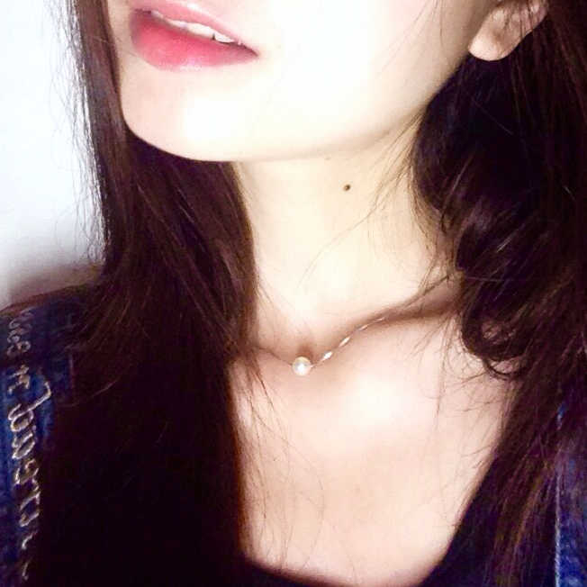

名字:
撑伞的龙猫
性别:女

介绍:心有猛虎
问题
答案
新建于:2015-04-08 09:14:06 AM，更新于2015-04-08 09:15:59 AM
正文:
笑的真不真～
开个玩笑啦，如果拍照对象是陌生人，那你需要抓拍，或者跟对方熟悉一会儿，聊聊天等会儿再拍，边聊边拍也挺好的。
拍照的时候温柔有趣一点，不然被拍的人会很尴尬，怎么笑得出来，要让对方放松最好能放开，不要拘谨。
照片里这位平时就是很内向文静的女生，但是只要够熟，想怎么拍怎么拍（已经被我拍的视我的相机手机如无物了）